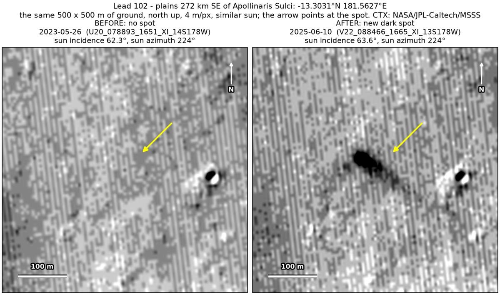
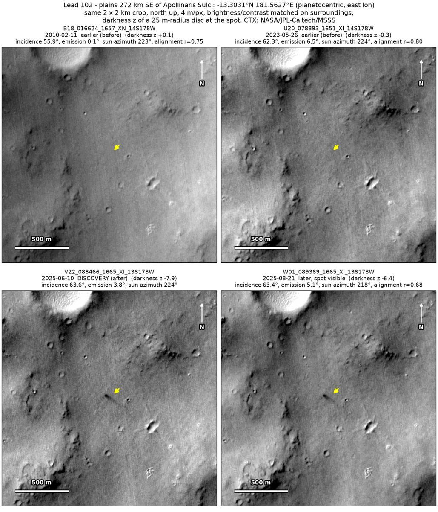
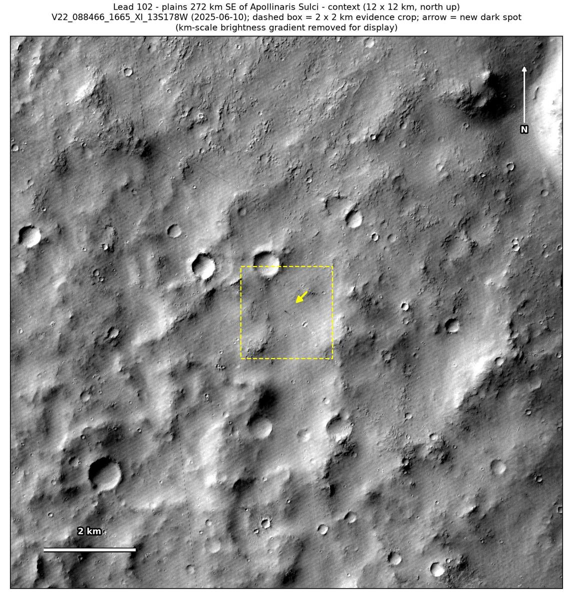

Professor of Mathematics
Paata Ivanisvili
Department of Mathematics, University of California, Irvine

← Possible new impact sites on Mars
Candidate 102: Plains 272 km south-east of Apollinaris Sulci
Strong · roughly 70%

What changed. An elongated dark spot, a dark head about 40 × 25 m with a fainter tail, appeared on smooth plains 272 km south-east of Apollinaris Sulci, about 200 m west of a small crater, between May 2023 and June 2025, in two CTX images from two orbits 72 days apart.
Why it may be a new impact. Two earlier images, of February 2010 and May 2023, show no spot there, the second under the same sun as the June 2025 image, while the small crater shows in all four; the aligned before-and-after difference is deepest at the spot, the second image with it, taken on another orbit, rules out an image defect, and an impact that strikes at a slant can make an elongated dark zone like this one.
- Location
- 13.303° S, 181.563° E (178.437° W)
- Absent
- 11 February 2010 and 26 May 2023
- Present
- 10 June 2025 and 21 August 2025
- Size
- Dark head about 40 × 25 m (42 × 26 m in the June 2025 image) at the west-north-west end of a fainter tail 73 m long
- Confidence
- Strong candidate; roughly 70% that it is a new impact.
- Caveat
- Its elongated shape could also be a dark deposit left by wind or by a dust devil that stalled, though there are no tracks near it, and HiRISE was aimed at a ‘new dark deposit’ 100 km away in 2024. No nearby feature is dark enough to check that the earlier images would have shown it. It lies outside every footprint of the high-resolution HiRISE camera; the nearest ends 33.5 km away. Like every candidate here, it is unconfirmed: see the caveat.

